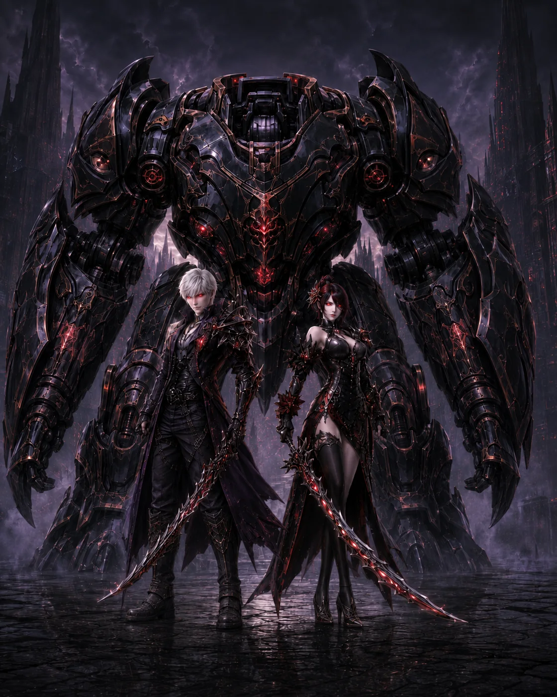

Aethertech
“Steel, meet face. Face, meet steel.”
Class Inspiration
Elyos and Asmodian visual references for the Aethertech. These images are inspiration for tone and style, not fixed character designs.

Visual inspiration only. These images do not establish a required appearance, armor design, weapon design, body type, gender, or personal style for this class. Elyos and Asmodian characters use the same class mechanics unless an explicit rule states otherwise.
The Aethertech fights from one piloted Medium Bastion platform. The pilot and Bastion are one character’s action economy, not two independent turns. The class alternates between integrated Bastion armaments, Aether Core expenditures, controlled Heat accumulation, venting, repairs, and system integration. The Bastion is a separate physical HP pool that enemies can damage without directly healing or harming the pilot unless an effect specifically targets the pilot.
Class Identity
Aethertechs are technist warriors who channel Aether through a Bastion: a magical-mechanical combat platform that transforms how the Daeva occupies the battlefield. The class combines personal skill, engineered systems, heavy protection, and controlled bursts of power. Aether Core and Heat represent the constant balance between available energy and the strain created by pushing the Bastion harder.
Tradition & Outlook
Aethertech is a comparatively modern Daeva discipline born from the recovery, study, and weaponization of advanced magical technology. The wider Aion tradition connects the class to Daeva analysis of Danuar technology and the lessons surrounding Hyperion; Wings of Atreia preserves that technological identity while its own campaign chronology and mechanics remain authoritative. Aethertechs often value ingenuity, technical discipline, experimentation, and the belief that knowledge taken from dangerous enemies can be turned toward Atreia’s defense.
Appearance & Adventuring
An Aethertech is visually defined by the Bastion and the contrast between a Daeva operator and an imposing Aether-powered war platform. Outside it, the Aethertech remains a trained combatant using the class’s approved weapons and equipment. Aethertechs adventure to recover technology, test designs under real conditions, oppose Balaur war machines, protect expeditions with a durable mobile platform, or prove that engineering can stand beside sword and spell as a heroic discipline.
Class Chassis
| Trait | Rule |
|---|---|
| Primary Ability | Intelligence |
| Secondary Ability | Constitution |
| Hit Die | d8 |
| Saving Throws | Intelligence, Constitution |
| Armor | Chain Armor |
| Weapons | Shortswords, Maces, Hammers |
| Signature Resources | Aether Core and Heat |
| Signature Mechanic | Piloted Bastion |
| Class Save DC | 8 + PB + INT modifier |
| Extra Attack | Level 5; two Bastion weapon attacks only |
| Spellcasting | None |
Bastion Targeting and Chassis
- The pilot and Bastion have separate HP and temporary HP. Repairs restore Bastion HP and are not healing.
- While occupied, ordinary physical attacks targeting the Aethertech generally strike the Bastion first. Mental, emotional, biological, and similar effects target the pilot when appropriate. One area effect normally does not double-hit both pilot and Bastion.
- Bastion physical STR/DEX/CON saves use PB + INT modifier. Mental saves use the pilot’s relevant save.
- When the Bastion reaches 0 HP it is Disabled. The pilot is ejected to the nearest legal space, takes 1d6 Force damage, and does not provoke Opportunity Attacks from the ejection. A disabled Bastion retains its current Core and Heat; a fresh chassis does not replace it.
- A Short Rest repairs a Disabled or damaged Bastion to half its maximum HP, if it currently has less HP than that amount. A Long Rest repairs the Bastion to its maximum HP. These restorations are repairs, not healing.
- Once the Bastion has at least 1 HP, it is operational. Entering or re-entering a deployed Bastion uses an Action when otherwise legal.
- A defeated or voluntarily replaced Bastion never functions as a companion or second PC.
| Level Band | Bastion AC | Bastion Maximum HP |
|---|---|---|
| 1–4 | 11 + PB | 8 + (5 × Aethertech level) + INT |
| 5–10 | 12 + PB | 8 + (5 × level) + INT |
| 11–17 | 13 + PB | 12 + (6 × level) + INT |
| 18–20 | 13 + PB | 16 + (7 × level) + INT |
Whenever a chassis improvement raises maximum HP, increase current Bastion HP by the same amount; this is a maximum-HP adjustment rather than healing.
Bastion Weapon Synchronization
While piloting a Bastion, designate one eligible carried weapon with which you are proficient as your Synchronized Weapon. A Bastion weapon attack roll is 1d20 + PB + INT modifier + the Synchronized Weapon's current equipment-quality bonus to Hit. Only that quality bonus transfers. The Bastion does not inherit the carried weapon's damage dice, damage type, properties, Critical Edge, reload mechanics, critical effects, or other traits. Only one Synchronized Weapon applies at a time; bonuses from multiple weapons never stack. Synchronization does not alter Bastion damage or save DCs. Targeting Array remains a separate once-per-turn +1 class-feature bonus and applies normally.
Aether Core
Maximum Aether Core equals PB + INT modifier, minimum 3; Level 9 increases this maximum by 1. A Long Rest restores all Core and a Short Rest restores PB. Core powers Bastion systems rather than ordinary movement or basic cannon attacks. Core Cycling later rewards making attacks without spending Core on the attack itself.
Heat
Heat returns to 0 after 1 minute outside genuine combat without intensive Bastion operation and is produced only by systems or features that explicitly say they gain Heat. Heat maximum is 5 at Levels 1–4, 6 at 5–8, 7 at 9–14, 8 at 15–19, and 9 at Level 20. Stable Heat is 0–2. At 3+ Heat the reactor is Pressurized and your Bastion weapon damage gains the class’s Pressurized bonus: +1 early, +2 from Level 9 onward. At maximum Heat you cannot voluntarily activate a system that would generate more Heat unless a feature explicitly permits it. If an allowed effect raises Heat above maximum, resolve that effect and then Overheat.
- Vent: Bonus Action, reduce Heat by 2. At Level 15 Vent reduces by 3; Cooling Fins increases the amount by 1.
- Overheat: take 2d6 Force damage to the Bastion, then reset Heat to 3; from Level 15 reset to 4. Your own Emergency Plating cannot reduce Overheat damage.
- Controlled Critical at Level 9: if you start your turn at maximum Heat, the first Bastion weapon hit that turn adds PB damage.
- Heat reduction from “preventing Heat gain” is not the same as Venting/cooling for features that care about cooling.
Resource Flow — Generation, Recovery, Spending & Reset
| Resource Flow | Rule |
|---|---|
| Aether Core — Maximum | PB + INT modifier, minimum 3; Level 9 increases this maximum by 1. |
| Aether Core — Recovery | Long Rest restores all Core. Short Rest restores Core equal to PB, up to maximum. Core Cycling, Flux Engineer, and later features can explicitly restore Core during play. |
| Aether Core — Spending | Powered Shot 1 Core + 1 Heat; Repulsion Blast 1 Core + 1 Heat; Emergency Plating 1 Core + 1 Heat; Field Mechanic 1 Core; Combat Repair 1 Core; Flux Engineer Heat Conversion 1 Core (or gain 2 Heat to restore 1 Core); Siege Engineer Bombardment Round +1 Core +1 Heat; Flux Engineer Thermal Reversal 1 Core; Siege Engineer Devastation Cannon 2 Core +2 Heat; Bulwark Protective Field 1 Core +1 Heat. Heat is operating pressure, not a spendable point pool. |
| Heat — Starting State | Heat is 0 outside intensive Bastion operation. Leaving the Bastion during combat does not automatically erase current Heat. |
| Heat — Maximum | 5 at Levels 1–4; 6 at 5–8; 7 at 9–14; 8 at 15–19; 9 at Level 20. |
| Heat — How It Rises | Powered Shot and other systems explicitly say when they gain Heat. Heat is an operating-pressure track, not a spendable point pool. |
| Heat — Cooling | Vent is normally a Bonus Action that reduces Heat by 2; Level 15 improves the base reduction to 3, and Cooling Fins increases the amount by 1. Other features can reduce or prevent Heat at their stated timing. |
| Overheat / Reset | If an explicit feature allows Heat to exceed maximum, resolve that system then Overheat: the Bastion takes 2d6 Force damage and Heat resets to 3, or 4 from Level 15. Ordinary noncombat cooling returns Heat to 0 after 1 minute without intensive Bastion operation. |
Level 1–20 Action & Resource Reference
| Level | Option | Timing | Cost | Trigger / Requirement | Short Effect |
|---|---|---|---|---|---|
| 1 | Aether Cannon / Lancer | Attack | — | Piloting operational Bastion | Make the active Bastion weapon attack using PB + INT + Synchronized Weapon quality bonus; two attacks from Level 5. |
| 1 | Reconfigure | Bonus Action | — | Piloting Bastion | Switch Cannon/Lancer configuration; grants no attack. |
| 1 | Powered Shot | On Bastion Weapon Hit / No Action | 1 Core + 1 Heat | Once/turn Bastion weapon hit | Add the current Force damage. |
| 1 | Repulsion Blast | Bonus Action | 1 Core + 1 Heat | Eligible nearby target | Use the printed forced-movement control. |
| 1 | Emergency Plating | Reaction | 1 Core + 1 Heat | Bastion takes attack damage; once/round | Reduce incoming Bastion damage. |
| 1 | Field Mechanic | Action | 1 Core | Bastion can be repaired | Repair Bastion HP; this is repair, not healing. |
| 2 | Vent | Bonus Action | — | Heat above 0 | Reduce Heat by the current Vent amount; Controlled Venting may add one rider. |
| 2 | Controlled Venting | After Vent / No Action | — | Meaningfully Vent Heat; once per Vent | After cooling, choose Aetheric Pulse, Defensive Reclamation, or Thruster Reposition. |
| 2 | Emergency Capacitor | Triggered / No Action | 1/Short or Long Rest | Activate an Aethertech feature while exactly 1 Core short of its cost | Supply the missing 1 Core for that immediate feature cost only. |
| 3 | Heat Conversion (Flux Engineer) | Triggered / No Action | 1 Core or +2 Heat | Once on your turn | Spend 1 Core to cool Heat, or gain 2 Heat to restore 1 Core; later Perfect Conversion improves cooling. |
| 3 | Intercepting Frame (Bulwark Pilot) | Reaction | — | Ally within 5 ft takes damage; once/round | Redirect up to PB + INT of that damage to the Bastion; redirected damage cannot be reduced by Emergency Plating. |
| 5 | Improved Core Systems | Triggered / No Action | — | Both Attack-action Bastion weapon attacks hit | Reduce Heat by 1 after both attacks resolve. |
| 6 | Bombardment Round (Siege Engineer) | On Cannon Hit / No Action | +1 Core +1 Heat | Aether Cannon hits; once/turn | Add the specialization splash damage. |
| 6 | Reactive Armor (Bulwark Pilot) | Triggered / No Action | — | Emergency Plating reduces its triggering damage to 0; once/round | Reduce Heat by 1. |
| 6 | Thermal Cascade (Flux Engineer) | Triggered / No Action | — | Use Heat Conversion or Vent Heat; once/turn under the feature | Choose 10-ft safe movement, PB + INT Bastion temporary HP, or Speed -10 ft on one hostile until your next turn. |
| 7 | Combat Repair | Bonus Action | 1 Core | Eligible Bastion repair | Repair 1d8 + INT. |
| 7 | Emergency Restart | Action | 1/Long Rest | Adjacent to Disabled Bastion | Restore it to 1 HP and set Core/Heat as printed. |
| 9 | Core Cycling | Triggered / No Action | — | Qualifying Bastion weapon attack that did not spend Core on that attack; once/turn | Regain 1 Core under the printed successful-attack condition. |
| 10 | Thermal Reversal (Flux Engineer) | Triggered / No Action | 1 Core | Bastion would gain Heat; once/round | Prevent 1 of that Heat. |
| 10+ | Aethercore Annihilation | Action + Bonus Action | 100 DP | Ultimate available | Attempt the class Ultimate under the universal Ultimate rules. |
| 10 | Siege Overload (Siege Engineer) | Triggered / No Action | +1 Heat | Powered Shot hits; once/turn | Gain 1 additional Heat to add +1d10 damage; the attack resolves before any resulting Overheat. |
| 11 | Twin-System | During Attack Action / No Extra Action | Normal system cost | Once/turn during the Attack action | Integrate one Repulsion Blast, Field Mechanic, or Vent into the Attack action; at Level 18 Perfect Integration allows two different eligible systems. |
| 13 | Aether Conversion | Triggered / No Action | — | Core recovery, cooling, or repair would exceed its maximum; once/round | Convert valid excess into Bastion temporary HP, bonus Force damage on your next hit, or 5 ft of safe movement. |
| 13 | Emergency Reactor | Start of Turn / No Action | 1/Short or Long Rest | Begin your turn at 0 Core | Restore PB Core, then gain 2 Heat. |
| 14 | Devastation Cannon (Siege Engineer) | On Cannon Hit / No Action | 2 Core +2 Heat | Aether Cannon hits; once/turn | Add +2d10 Force; cannot share the attack with Powered Shot. |
| 14 | Protective Field (Bulwark Pilot) | Triggered / No Action | 1 Core +1 Heat | Ally within 10 ft takes damage; once/round | Reduce that damage by 1d10 + INT. |
| 14 | Siege Momentum (Siege Engineer) | Triggered / No Action | — | Devastation Cannon or Siege Overload reduces a hostile to half maximum HP or lower; once/round | Regain 1 Core or reduce Heat by 1. |
| 14 | Reactor Feedback (Flux Engineer) | Triggered / No Action | — | Intentionally reach maximum Heat without Overheating; once/round | Choose Bastion temporary HP, Force damage to one hostile, or reduce Heat by 1 after the triggering system resolves. |
| 14 | Perfect Conversion (Flux Engineer) | During Heat Conversion / No Extra Action | 1 Core or +2 Heat | Use Heat Conversion | Cooling option becomes spend 1 Core to reduce Heat by 3; the restore-Core option remains gain 2 Heat to restore 1 Core. |
| 15 | Overdrive | Triggered / No Action | Mandatory Overheat afterward | Heat would exceed maximum | Operate above maximum Heat until end of turn; gain the printed weapon-damage and Speed benefits, then Overheat. |
| 17 | Perfect Core Cycling | Triggered / No Action | — | Complete your Attack action after spending no more than 1 Core during the turn; once/turn | Regain 1 Core; routine weapon-operation recovery remains capped at 1 Core per Aethertech turn. |
| 18 | Perfect Integration | During Attack Action / No Extra Action | Normal system costs | Use Twin-System | Integrate two different eligible auxiliary systems; Vent and Combat Repair cannot be combined in the same integrated sequence. |
| 18 | Reactor Sovereignty | Triggered / No Action | — | One Heat gain; once/round | Prevent 1 Heat from that gain; this is Heat prevention, not cooling. |
| 20 | Aether Dominion | Bonus Action | 1/Long Rest | Level 20 capstone available | For 1 minute, raise operating maximum Heat by 2, allow Core Overflow, improve the first Vent each round, strengthen Cannon output, and use the printed System Supremacy options. |
| 20 | Perfect Reactor | Initiative / No Action | — | Genuine combat begins | Begin with at least half maximum Core and Heat no higher than 3. |
| 20 | Master Engineer | Triggered / No Action | — | Spend Core on one system, gain Heat from a different system, and hit with a Bastion weapon; once/turn | Choose +1 Core, -1 Heat, or repair the Bastion by PB + INT. |
Coverage. This Level 1–20 reference covers every class option in the current manuscript that creates or materially changes an Action, Bonus Action, Reaction, triggered player choice, or signature-resource expenditure, refund, recovery, overflow conversion, or combat starting state. A level that only changes passive numerical scaling, grants a Feat/ASI or Spell Advancement, or automatically upgrades an already listed option does not need a duplicate row; use the level progression for the new value. Timing rule. “Triggered / No Action” means the option modifies or responds to its stated event without consuming your Action, Bonus Action, or Reaction. Specific feature text remains authoritative.
Level 1 Bastion Systems
| System | Cost / Action | Exact Effect |
|---|---|---|
| Aether Cannon | Attack | Ranged Bastion weapon attack, 60/120 ft; to hit = PB + INT + Synchronized Weapon quality bonus; 1d10 + INT Force damage. |
| Aether Lancer | Attack | Melee Bastion weapon attack, 10-ft reach; to hit = PB + INT + Synchronized Weapon quality bonus; 1d10 + INT Force damage. |
| Reconfigure | Bonus Action | While piloting the Bastion, switch the active integrated weapon between Aether Cannon and Aether Lancer. The chosen configuration remains active until switched again. Reconfigure grants no attack and does not increase the number of attacks you can make. |
| Powered Shot | 1 Core + 1 Heat; once/turn on Bastion weapon hit | Add +1d8 Force damage to that Bastion weapon hit. Scales to 1d10 at L5, 2d8 at L11, 3d8 at L17. |
| Repulsion Blast | 1 Core + 1 Heat; Bonus Action | Force a nearby eligible target to move under the feature’s normal save/size rules; used for space control rather than a second cannon attack. |
| Emergency Plating | 1 Core + 1 Heat; Reaction; once/round | Reduce incoming Bastion attack damage by 1d6 + INT; 2d6 + INT at L11; 3d6 + INT at L17. |
| Field Mechanic | 1 Core; Action | Repair the Bastion for 1d6 + INT HP. This is a repair, not healing. |
| Pilot Sidearm | Attack while not relying on Bastion armament | 1d6 + INT Force damage, range 40/80; not a Bastion weapon and does not qualify for Bastion-weapon riders unless explicitly stated. |
Level-by-Level Progression
Level 1
Gain Bastion, Aether Core, Heat, the Bastion Armament System (Aether Cannon, Aether Lancer, and Reconfigure), Powered Shot, Repulsion Blast, Emergency Plating, Field Mechanic, and the sidearm. Learn the baseline Disabled/ejection/re-entry rules. Aether Cannon and Aether Lancer are both Bastion weapons. Reconfigure uses a Bonus Action, grants no additional attack, and does not itself spend Core or generate Heat.
Level 2
Gain Aethertech Modules. Choose two different modules from the list below. Unless a module states otherwise, it functions only while you are piloting your Bastion. You cannot choose the same module more than once. Controlled Venting is a separate Level 2 feature and is not a module.
Targeting Array. Once on each of your turns when you make an attack roll with a Bastion weapon, add +1 to that attack roll. This bonus applies to either Aether Cannon or Aether Lancer.
Reinforced Plating. Increase the Bastion’s maximum HP by 2 × your Aethertech level. Recalculate this bonus whenever your Aethertech level increases.
Mobility Jets. While piloting the Bastion, its Speed increases by 10 feet. In addition, once on each of your turns after you Vent Heat, you may move the Bastion 5 feet without provoking Opportunity Attacks.
Cooling Fins. Whenever you Vent Heat, reduce Heat by 1 additional point. This increases the normal Vent reduction from 2 to 3, and from Level 15 increases the improved Vent reduction from 3 to 4.
Stabilizer Frame. While piloting the Bastion, you have Advantage on ability checks and saving throws made to resist being pushed, pulled, knocked Prone, or otherwise forcibly moved.
Emergency Capacitor. Once per Short or Long Rest, when you activate an Aethertech feature that costs Aether Core and you are exactly 1 Core short of its cost, the capacitor supplies that missing 1 Core for that feature. The supplied Core exists only for that immediate cost, cannot be stored, and cannot raise your current Core above its maximum.
Controlled Venting. Whenever you meaningfully Vent Heat through the Vent action or an Aethertech feature that explicitly counts as Venting, after the Heat reduction resolves choose one rider: Aetheric Pulse — one hostile creature you can see within 5 feet of the Bastion takes 1d4 Force damage; Defensive Reclamation — you gain temporary HP equal to PB + INT modifier; Thruster Reposition — move the Bastion up to 5 feet without provoking Opportunity Attacks. Controlled Venting can trigger only once per Vent, and Heat reduction that merely prevents Heat gain does not count as Venting.
Level 3
Choose Siege Engineer, Bulwark Pilot, or Flux Engineer.
Siege Engineer — Heavy Cannon / Siege Calibration
Heavy Cannon — Aether Cannon damage becomes 1d12 + INT. Siege Calibration — Once on each of your turns when Aether Cannon hits a creature at least 30 feet away, choose: Armor Break gives -1 AC against your next Bastion weapon attack before your next turn; Concussive Impact pushes 5 feet if eligible; Long-Range Calibration ignores long-range Disadvantage for that attack.
Bulwark Pilot — Fortress Plating / Intercepting Frame
Fortress Plating — Increase Bastion maximum HP by 2 × your Aethertech level. Intercepting Frame — Once per round as a Reaction when an ally within 5 feet takes damage, redirect up to PB + INT of that damage to the Bastion. Redirected damage cannot be reduced by Emergency Plating.
Flux Engineer — Heat Conversion / Flux Discharge
Heat Conversion — Once on each of your turns with no Action required, choose: spend 1 Core to reduce Heat by 2, or gain 2 Heat to restore 1 Core. Flux Discharge — Once on each of your turns when you actually gain Heat from a Core-powered system, one hostile creature within 15 feet takes Force damage equal to INT, minimum 1.
Level 4
Gain Feat / ASI.
Level 5
Extra Attack gives two Bastion weapon attacks when you take the Attack action. Both attacks use whichever Bastion weapon configuration is active when each attack is made; changing configuration still requires Reconfigure as a Bonus Action and grants no additional attack. Bastion AC becomes 12 + PB. Powered Shot becomes +1d10. Improved Core Systems: when both Attack-action Bastion weapon attacks hit, reduce Heat by 1 after both resolve. Heat maximum increases according to progression.
Level 6
Gain your Level 6 specialization feature.
Siege Engineer — Bombardment Round / Anchored Firing
Bombardment Round — Once on each of your turns when Aether Cannon hits, spend 1 additional Core and gain 1 additional Heat. The target and chosen creatures within 5 feet take 1d6 Force damage; secondary creatures make a DEX save for half. Splash damage does not trigger Bastion weapon-hit riders. Anchored Firing — If you moved no more than 5 feet before attacking, your first Aether Cannon hit that turn deals +PB damage.
Bulwark Pilot — Reactive Armor / Mobile Cover
Reactive Armor — Emergency Plating becomes 1d8 + INT for the Bulwark. Once per round, if it reduces the triggering damage to 0, reduce Heat by 1. Mobile Cover — Allies within 5 feet gain Half Cover against ranged attacks when the Bastion physically stands between them and the attacker.
Flux Engineer — Thermal Cascade / Efficient Conversion
Thermal Cascade — Whenever you use Heat Conversion or Vent Heat, choose one: move 10 feet without provoking from one creature; gain PB + INT Bastion temporary HP; or reduce one hostile creature’s Speed by 10 feet until the start of your next turn. Efficient Conversion — Heat Conversion remains once per turn and requires no Action. Each use may also choose one Thermal Cascade effect.
Level 7
Combat Repair uses a Bonus Action and costs 1 Core to repair 1d8 + INT. Emergency Restart 1/LR uses an Action adjacent to a Disabled Bastion: restore it to 1 HP, set Heat 4 and Core 0, allowing re-entry under normal rules.
Level 8
Gain Feat / ASI.
Level 9
Maximum Core increases by 1. Pressurized damage becomes +2. Controlled Critical: if you start at maximum Heat, first Bastion weapon hit adds PB damage. Core Cycling once/turn after a Bastion weapon attack that did not spend Core on that attack regains 1 Core under the feature’s normal successful-attack condition.
Level 10
Gain your Level 10 specialization feature.
Aethercore Annihilation — Ultimate Ability
Ultimate Activation - 100 DP. As your Action and Bonus Action, activate this feature while piloting an operational Bastion or while within 5 feet of your Disabled Bastion. If the Bastion is Disabled, you immediately enter it without an additional Action; this entry does not provoke Opportunity Attacks. The Bastion remains Disabled unless the Ultimate attack hits or a miss is resolved with Release the Power and the resulting partial repair raises the Bastion above 0 HP. After this Ultimate attempt resolves, you enter Ultimate Recovery during your next turn.
Annihilation Attack. Make one Ultimate Bastion weapon attack with either Aether Cannon or Aether Lancer; you may use either armament without Reconfiguring, and this does not change the configured weapon after resolution. You may make this attack through a Disabled Bastion as though it were operational solely for resolving Aethercore Annihilation. On a hit, it deals its normal Bastion weapon damage plus fixed Force damage of 100 at Levels 10-14, 120 at Levels 15-19, or 140 at Level 20.
System Ascendance. On a hit, if the Bastion was Disabled, it becomes operational with HP equal to half its maximum HP; if it was operational but below half HP, its HP becomes half maximum instead. These restorations are repairs, not healing, and your Heat becomes 0. Then push the target up to 10 feet if it is Huge or smaller. At Level 15, the Bastion's activation or repair instead restores it to three-quarters maximum HP. At Level 20, it restores to maximum HP and the push increases to 20 feet. On a miss resolved with Release the Power, restore HP equal to half the amount System Ascendance would have restored from the Bastion's current HP on a hit, rounded down. If the Bastion was Disabled and this raises it above 0 HP, it becomes operational. Heat does not reset and the push does not occur on this partial release.
Siege Engineer — Penetrating Cannon / Siege Overload
Penetrating Cannon — Aether Cannon attacks ignore Half Cover when the shot is not fully blocked. This benefit does not apply to Aether Lancer attacks. Siege Overload — Once on each of your turns when Powered Shot hits, gain 1 additional Heat to add +1d10 damage. It may exceed maximum Heat; resolve the attack before Overheat.
Bulwark Pilot — Defensive Core / Guardian Thrusters
Defensive Core — Once per round while at 3 or more Heat, reduce one damage instance to the Bastion by PB before Emergency Plating. Guardian Thrusters — When using Intercepting Frame, move up to 5 feet toward the ally without provoking before redirecting damage, ending within 5 feet.
Flux Engineer — Thermal Reversal / Flux Lock
Thermal Reversal — Once per round when the Bastion would gain Heat, spend 1 Core to prevent 1 of that Heat. If no Heat is actually gained, features requiring Heat gained do not trigger. Flux Lock — Once on each of your turns when Flux Discharge damages a hostile creature, choose until the start of your next turn: no Opportunity Attacks, Speed -10 feet, or -1 to its next attack roll.
Level 11
Bastion AC becomes 13 + PB and HP formula becomes 12 + 6×level + INT, increasing current HP by the chassis increase. Twin-System: once/turn during the Attack action integrate one Repulsion Blast, Field Mechanic, or Vent as part of the action rather than consuming its ordinary separate action economy. Powered Shot becomes +2d8; Emergency Plating becomes 2d6 + INT.
Level 12
Gain Feat / ASI.
Level 13
Aether Conversion: once per round, when Core recovery would exceed maximum Core, cooling would reduce Heat below 0, or repair would exceed maximum Bastion HP, convert valid excess into one benefit: PB Bastion temporary HP; PB bonus Force damage on your next Bastion hit before the end of your next turn; or 5 feet of safe movement from one creature. You cannot manufacture nonexistent excess solely to trigger this feature. Emergency Reactor: once per Short or Long Rest, if you begin your turn at 0 Core, restore PB Core and then gain 2 Heat. This cannot recursively trigger Core-recovery riders. Hardened Pilot Compartment: when the occupied Bastion reaches 0 HP, reduce ejection damage by your INT modifier, minimum 0. Forced ejection does not knock you Prone.
Level 14
Gain your final specialization feature.
Siege Engineer — Devastation Cannon / Siege Momentum
Devastation Cannon — Once on each of your turns when Aether Cannon hits, spend 2 Core and gain 2 Heat to add +2d10 Force damage. You cannot use Powered Shot on the same attack. Siege Momentum — Once per round when Devastation Cannon or Siege Overload reduces a hostile creature to half maximum HP or lower, regain 1 Core or reduce Heat by 1.
Bulwark Pilot — Bastion Fortress / Protective Field
Bastion Fortress — The first qualifying physical weapon hit against the Bastion each round is reduced by PB + INT. Refreshes at the start of your turn. Protective Field — Once per round when an ally within 10 feet takes damage, spend 1 Core and gain 1 Heat to reduce that damage by 1d10 + INT. You cannot combine Protective Field and Intercepting Frame on the same damage instance.
Flux Engineer — Reactor Feedback / Perfect Conversion
Reactor Feedback — Once per round when you intentionally reach maximum Heat without Overheating, choose: PB + INT Bastion temporary HP; one hostile within 20 feet takes 1d8 + INT Force damage; or reduce Heat by 1 after the triggering system fully resolves. Perfect Conversion — Heat Conversion becomes: spend 1 Core to reduce Heat by 3, or gain 2 Heat to restore 1 Core. It remains once per turn.
Level 15
Overdrive: when Heat would exceed maximum, you may operate above maximum until end of the turn; Bastion weapon hits gain +PB damage and Speed +10. After end-of-turn effects, mandatory Overheat occurs. Vent now reduces Heat by 3 before Cooling Fins. Overheat resets to 4.
Ascendant Aethercore Annihilation
Your Aethercore Annihilation now uses all Levels 15-19 values and improvements described in its Level 10 feature.
Level 16
Gain Feat / ASI.
Level 17
Apex Systems: Powered Shot becomes +3d8 Force damage; Emergency Plating becomes 3d6 + INT damage reduction; Repulsion Blast may affect up to two creatures within 15 feet, each making the normal STR save, and on a failure each is pushed up to 15 feet. One activation still costs 1 Core and gains 1 Heat. Master Modules: install four Bastion Modules simultaneously; at the end of a Short Rest, you may replace one installed Module with another available Module. Perfect Core Cycling replaces Core Cycling: once on each of your turns after completing your Attack Action, if you spent no more than 1 Core during that turn, regain 1 Core. Routine weapon-operation recovery can never restore more than 1 Core per Aethertech turn.
Level 18
Perfect Integration upgrades Twin-System: during the Attack action integrate two different eligible auxiliary systems. Vent and Combat Repair cannot be combined in the same integrated sequence. Reactor Sovereignty once/round prevents 1 Heat from one Heat gain; this is Heat prevention, not cooling. Bastion HP formula becomes 16 + 7×level + INT and current HP increases by the chassis gain.
Level 19
Gain universal Empyrean Boon.
Level 20
Aethertech Ascendant. Perfect Reactor starts genuine combat with at least half maximum Core and Heat no higher than 3. Eternal Bastion: first time each combat an operational Bastion would fall to 0, it remains at 1 HP. Master Engineer once/turn after spending Core on one system, gaining Heat from a different system, and hitting with a Bastion weapon chooses +1 Core, -1 Heat, or repair PB+INT. Aether Dominion 1/LR Bonus Action for 1 minute raises operating maximum Heat by 2, allows Core Overflow, improves the first Vent each round, adds +2d10 to one cannon hit each round, and grants the finalized System Supremacy options without creating another Attack action.
Apex Aethercore Annihilation
Your Aethercore Annihilation uses its Level 20 damage and all Level 20 improvements described in the Level 10 feature.
Specialization Reassignment
Initial choice — Level 3. Choose one Specialization available to your class.
Reassignment checkpoints — Levels 6, 10, and 14. When gaining one of these levels, you may either continue your current Specialization or change to another Specialization available to your class.
If you change Specialization, remove every feature granted by the previous Specialization and replace it with the complete feature package of the newly selected Specialization through your current checkpoint. Features from different Specializations cannot be mixed, retained, or combined.
When newly entering a Specialization, make any choices required by the features you now gain. Continuing the same Specialization does not reset earlier internal choices unless an explicit feature says otherwise.
If the removed Specialization granted extra known options, selections, capacities, or Specialization-dependent maxima, remove, reselect, or recalculate them as necessary to satisfy the new path. Reassignment itself does not restore HP or class resources, and current values cannot remain above any new maximum.
Reassignment occurs only as part of gaining Level 6, Level 10, or Level 14. It cannot be performed through a rest, downtime, training, ordinary retraining, or between adventures. The Level 14 decision is the final normal Specialization choice and remains locked through Level 20 unless a later explicit rule says otherwise.
Specialization Identity Reference
| Path | Primary Strength | Play Pattern | Tradeoff |
|---|---|---|---|
| Siege Engineer | Highest cannon nova | Build Core/Heat, line up heavy cannon shots, spend the correct major rider, then vent/recover. | Less mitigation and reactor flexibility. |
| Bulwark Pilot | Bastion durability and mitigation | Keep the platform operational, absorb physical pressure, and protect the pilot through superior chassis defenses. | Lower offensive spike. |
| Flux Engineer | Core/Heat flexibility | Convert between resources, stay Pressurized without uncontrolled Overheat, and exploit system integration. | Less peak damage and raw durability. |
Example System Sequence
- Attack with the currently active Bastion weapon. On one hit, spend 1 Core and gain 1 Heat for Powered Shot. The second Attack-action Bastion weapon attack remains a normal attack; if both hit at Level 5, Improved Core Systems reduces Heat by 1 after both resolve. If you need the other configuration, Reconfigure before or after the Attack action using your Bonus Action; switching grants no additional attack.
- At Level 9, if the attack itself spent no Core and satisfies Core Cycling, regain Core after the attack under its once-per-turn limit. Do not treat a refund as a new Core-generation trigger.
- When Heat reaches Pressurized territory, decide whether the +2 weapon damage is worth staying hot. Vent as a Bonus Action when the risk of Overheat outweighs the extra pressure.
- At Level 11, Twin-System can integrate one auxiliary system into the Attack action. It still does not provide a second Attack action or a second independent Bastion turn.
- At Level 15, Overdrive intentionally crosses maximum Heat for one turn, then forces Overheat after end-of-turn effects; Emergency Plating cannot cancel the Overheat damage.